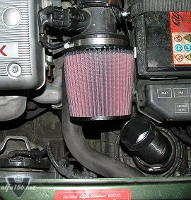
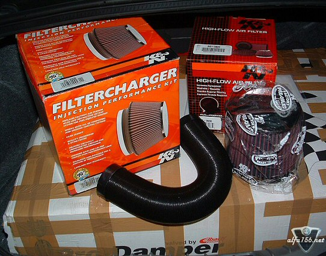

| .: K&N 57i filter mod :. |
I used about 30 minutes to fit this with the inctructions enclosed. Very good instructions acutally that takes you step by step. I could not open the three screws on the old factory filter, so I was unable to take out the original filter. And I also made my own solution with the cold air pipe that blows cold air at the filter. I will remove the original filter later and might do some more mods to get more cold air. My first experience is that you don't hear that much difference when just revving the engine. But when acellerating with some load on the engine, you will really hear it. Mostly you will hear the sound from the filter from 2nd gear and higher or when |
 |

| .: K&N 57i filter mod :. |